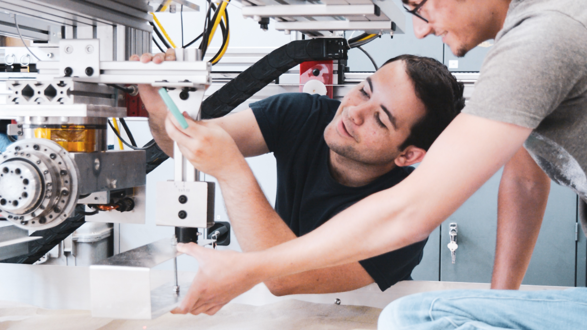

<div class="case">
  <div class="case__container">
    <app-header></app-header> 
    <div class="float">
      <div class="float__top"></div>
      <h1 class="header__big float__header">OffBeat</h1>
      <p class="float__text text__regular">Off-Beat was the culmination of a semester long Service Design project. Service design is a framework of design thinking which is unique in that it considers all parts of an organization as part of the design. For example, a service designer working for a restaurant chain would consider far more than normal customer experiences and touchpoints (waitstaff, menu’s, ect.). Their design would include the backstage processes, from how food is delivered to how the kitchen staff receives the orders in order to provide the best experience to all stakeholders.</p>

      <p class="float__text text__regular">For this project we were tasked with designing a music related service that targeted an audience other than the mass market.</p>

      

      <p class="float__text text__regular">This is the one photo of the whole team we took during the entire process, right after the final presentation. From front to back: Steven Ji, Emma Zelenko, me and Devika Khowala.</p>

      <div class="float__subtitle">
        <h2 class="header__medium float__subtitle--text">CubeRover Subtitle</h2>
      </div>
      
      <div class="float__four">
        
        
        
        
      </div>

    </div>
    
  </div>
</div>